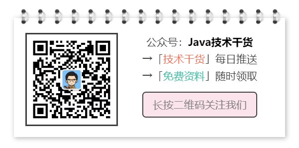

由于之前采用Lodop打印控件(商业版付费,可以使用免费版 但是会有水印)去打印小票，是一行一行的打印，但是不满足UI给到复杂布局的小票样式，所以得重新考虑如何来实现。
art-template 是一个简约、超快的模板引擎。
它采用作用域预声明的技术来优化模板渲染速度，从而获得接近 JavaScript 极限的运行性能，并且同时支持 NodeJS 和浏览器。在线速度测试。
- 中文文档：art-template中文文档
跟着文档首先熟悉一下，然后看一下语法，跟着语法去实践一下，很快就可以上手完成功能。
Lodop是支持浏览器端的web打印控件， 功能挺强大的。
目前客户端有很多是基于浏览器内核套的壳，那么在需要特殊打印的场景下，可以试下这个控件。
- 方案一：用html+css进行网页布局，html2canvas.js 来实现将网页转换成图片，然后直接用Lodop打印图片， 但是经过测试，打印出来的图片模糊不清，而且html2canvas.js的兼容性IE>8，所以不符合
- 方案二：将这部分功能让后端去完成模板+数据渲染并生成图片去打印，但是发现跟方案一有相似的地方，解决不了图片打印模糊不清，但是可以解决兼容性问题，依然不符合
- 方案三：采用html+css进行网页布局，用art-template进行模板渲染后生成html字符串，然后采用Lodop打印控件来直接打印网页。经过实际测试，打印出来的字迹清晰，而且art-template的兼容性在IE5下的功能也是正常的。所以最终就采用该方案
art-template模板编写
<!-- 58小票打印样式 -->
<script id="print58-tpl" type="text/html">
<!DOCTYPE html> <html> <head> <meta charset="utf-8" />
<style type="text/css">
body {
margin: 0;
padding: 0;
width: 100%;
}
.clearfloat {
overflow: hidden;
}
.left{
float:left;
}
.right{
float:right;
}
.font10 {
font-size: 14px;
}
.fontW {
font-weight:bold;
}
.font8 {
font-size: 12px;
}
.margin2{
margin: 2px 0;
}
.margin5{
margin: 5px 0 !important;
}
.printer{
width: 174px;
}
.title {
text-align: center;
width:90%;
margin:auto;
padding: 5px 0;
}
.divide {
text-align:center;
margin:auto;
}
.detail {
margin: 2px 0;
}
.detail>.left {
margin-left: 10px;
}
.quan>.left {
margin-left: 10px;
}
.bottom{
width:100%;
height:200px;
background:pink;
clear:both;/* 位于上方写了float的div，下面这个div必须加这一句 */
}
</style>
</head>
<body>
<div class="printer">
<div class="title font10 fontW">
<div>{{shopName}}</div>
<div style="margin-top:2px;">交易汇总</div>
</div>
<div class="divide">===================</div>
<div class="haha clearfloat font8">
<span class="left">开始日期:</span>
<span class="right">{{startTime}}</span>
</div>
<div class="haha clearfloat font8">
<span class="left">结束日期:</span>
<span class="right">{{endTime}}</span>
</div>
<div class="content">
<div class="divide">-----------------------------</div>
<div class="head font8 clearfloat fontW">
<span class="left">总收款:</span>
<span class="right">{{totalAmount | toFixed}}元({{totalCount}}笔)</span>
</div>
{{each tradeList temp}}
<div class="detail font8 clearfloat">
<span class="left">{{temp.pay_type_desc}}:</span>
{{if depositState == 1 && temp.pay_type != 2}}
{{if temp.tradeLogCount > 0}}
<span class="right">{{temp.consume_money | toFixed}}元({{temp.tradeLogCount}}笔)</span>
{{/if}}
{{else}}
<span class="right">{{temp.money | toFixed}}元({{temp.tradeLogCount}}笔)</span>
{{/if}}
</div>
{{/each}}
{{if depositState == 1}}
<div class="detail font8 clearfloat">
<span class="left">押金:</span>
<span class="right">{{depositMoney | toFixed}}元</span>
</div>
{{/if}}
<div class="divide margin5">>>>>>>>>>>>>>>>>>></div>
<div class="font8 clearfloat margin2">
<span class="left">打印人:</span>
<span class="right">{{printer}}</span>
</div>
<div class="font8 clearfloat margin2">
<span class="left">打印时间:</span>
<span class="right">{{printTime}}</span>
</div>
</div>
<div>
</body>
</html>
</script>上面的可以按照自己的样式效果，先写好静态页面，然后在根据art-template的语法动态设置
渲染数据：
// 增加过滤器
template.defaults.imports.toFixed = function(num) {
return Number(num).toFixed(2);
}
var printhtml = template('print58-tpl', detail);
$("#printerView").html(printhtml);
var height = $("#printerView").outerHeight(); // 为了动态获取页面渲染过后的高度，传递到打印控件，指定打印多少。
// 创建打印页
// 初始化小票打印身份信息
initLodopLicences();
// 创建小票打印头信息
//createPayTitle("汇总打印凭证", "汇总信息");
try{
LODOP.PRINT_INIT("打印小票");
LODOP.SET_PRINT_PAGESIZE(3,"58mm",20,"");
LODOP.ADD_PRINT_HTM("9mm","0mm","RightMargin:0mm",height+"px", printhtml);
}catch(err){
}
createPayFooter();
// 开始打印
startPayPrint(pcPrinterName);经过为期1天左右的时间，从方案的筛选到最终完成功能，学习到对于需要打印小票的场景，又多了一点点体会。
